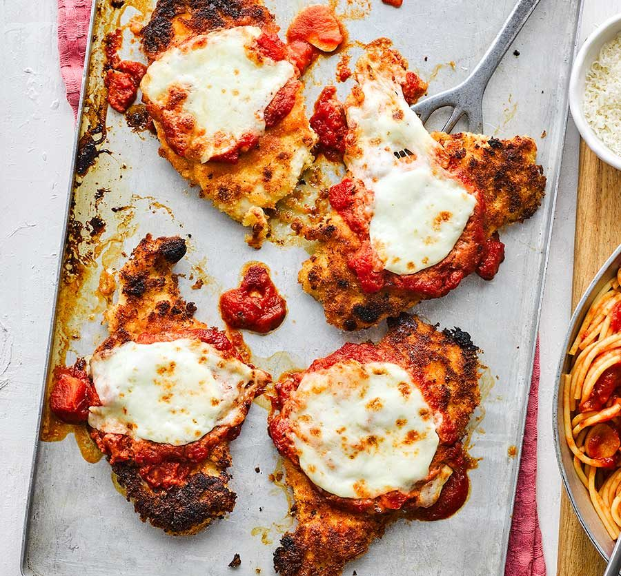

Homemade Chicken Parmigiana

I received this recipe several years ago from a family member who swore it was a great romantic meal.
She was right. My husband asks me to make this meal every time we have a date night. The quantity of ingredients look intimidating,
but don't let them fool you. It's easy and delicious! The whipping cream gives it a creamy texture that you just can't get enough of!
Brace yourself for this one—they're the same dish! Chicken Parmesan and chicken Parmigiana are just different names for the same exact recipe.
And, with a name like “chicken Parmigiana”, you might assume that this recipe is Italian. While it has roots in Italy (in a way),
chicken Parmesan is all-American.
Ingredients
- 1 tablespoon butter
- 1 teaspoon minced garlic
- ⅓ cup minced onion
- 1 (14.5 ounce) can diced tomatoes with juice
- ½ teaspoon sugar
- ¼ cup heavy cream
- salt and pepper to taste
- ⅓ cup fine dry bread crumbs
- 2 tablespoons freshly grated Parmesan cheese
- ½ teaspoon dried oregano
- 1 egg, beaten
- 2 tablespoons milk
- 3 (5 ounce) skinless, boneless chicken breast halves
- 3 tablespoons olive oil
- ¾ cup shredded Mozzarella cheese
- 1 tablespoon freshly grated Parmesan cheese
Directions
- Melt butter in a saucepan over medium heat. Stir in garlic and onion, and cook until the onion has softened and turned translucent,
about 2 minutes. Pour in diced tomatoes and sugar. Increase heat to medium-high, and bring to a simmer, then reduce heat to medium-low,
and continue simmering for 10 minutes, stirring occasionally. Once the sauce has simmered, stir in the cream and season to taste with salt and pepper.
Simmer for an additional 3 minutes. Lower heat and keep sauce warm
- Stir together bread crumbs, 2 tablespoons Parmesan cheese, and dried oregano; set aside. In a small bowl, whisk together egg and 2 tablespoons milk until blended.
Dip chicken breasts into the egg, then press into breadcrumb mixture to coat both sides, shaking off excess.
- Heat olive oil in a large skillet over medium heat. Add chicken breasts and cook on both sides until they reach an internal temperature of 160 degrees F (70 degrees C),
and the bread crumb crust is golden brown, about 10 minutes.
- To serve, spoon sauce over chicken and top with Mozzarella and Parmesan cheeses. Let stand a few minutes until the cheese has melted from the heat of the sauce.